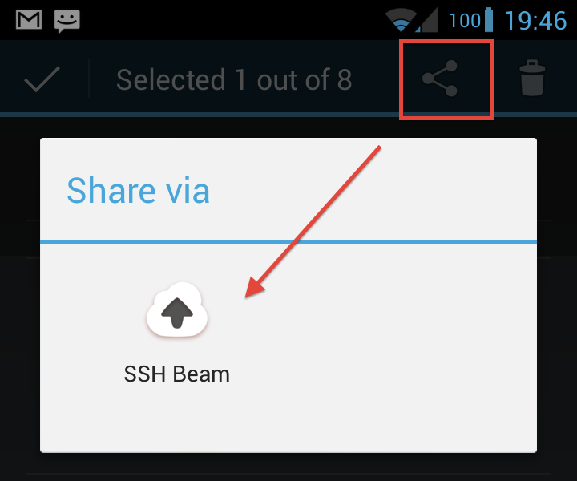
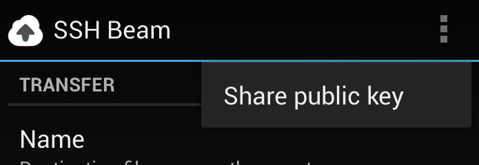

This is the SSH Beam help. Just hit the "Share" button in any app to start using it!
SSH Beam lets you use Android's system-wide "Share" feature to send stuff to a server via SSH/SFTP.
You can use it for a variety of purposes, for example :
cron create blog posts from incoming filesrtorrentSSH Beam can, at the moment, use two types of authentication : password and public key.
Public keys are generated on-the-fly by the app for each combination of a server, port and username. Use the Share public key menu item to send it through another app, then set it up on your server.

Both public keys and passwords are saved unencrypted in the app's
local storage. This is not accessible by any other than the app itself or
root, but I thought you might want to know.
Use the issue tracker on GitHub to send feedback, it'll be much easier to track it. Of course, feel free to leave your comments on the Play Store too!
Whoa, you really read all that, down to the credits? Nice to meet you, I'm François-Xavier, a French student in software engineering!
This app was written in Scala using SBT-Android as part of a final year project with my engineering school Télécom ParisTech.
If interested, you can check out :
Icon under CC-BY-SA by Dutch Icon (via Smashing Magazine), since I don't really have the time to make a cool icon. Thanks a lot guys!
I'm also using some parts of the Scaloid library.